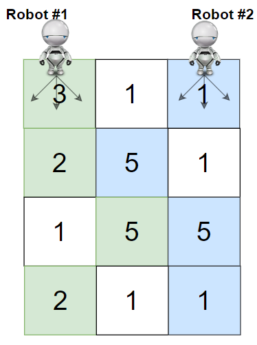
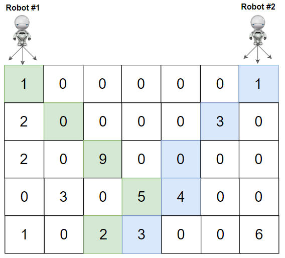

| Category | Difficulty | Likes | Dislikes |
|---|---|---|---|
| Algorithms | Hard | 4398 | 54 |
sprinklr | amazon | flipkart | google | facebook
You are given a rows x cols matrix grid representing a field of cherries where grid[i][j] represents the number of cherries that you can collect from the (i, j) cell.
You have two robots that can collect cherries for you:
(0, 0), and(0, cols - 1).Return the maximum number of cherries collection using both robots by following the rules below:
(i, j), robots can move to cell (i + 1, j - 1), (i + 1, j), or (i + 1, j + 1).grid.
Example 1:

Input: grid = [[3,1,1],[2,5,1],[1,5,5],[2,1,1]]
Output: 24
Explanation: Path of robot #1 and #2 are described in color green and blue respectively.
Cherries taken by Robot #1, (3 + 2 + 5 + 2) = 12.
Cherries taken by Robot #2, (1 + 5 + 5 + 1) = 12.
Total of cherries: 12 + 12 = 24.Example 2:

Input: grid = [[1,0,0,0,0,0,1],[2,0,0,0,0,3,0],[2,0,9,0,0,0,0],[0,3,0,5,4,0,0],[1,0,2,3,0,0,6]]
Output: 28
Explanation: Path of robot #1 and #2 are described in color green and blue respectively.
Cherries taken by Robot #1, (1 + 9 + 5 + 2) = 17.
Cherries taken by Robot #2, (1 + 3 + 4 + 3) = 11.
Total of cherries: 17 + 11 = 28.
Constraints:
rows == grid.lengthcols == grid[i].length2 <= rows, cols <= 700 <= grid[i][j] <= 100